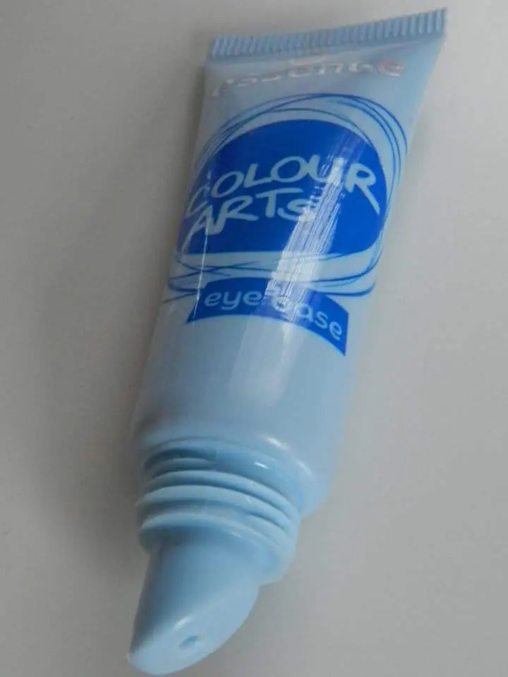
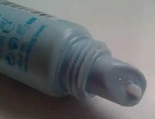

Colour Arts Eye Base di Essence per occhi
Vi è mai capitato di non considerare un prodotto e poi ricredervi?
A me così è successo con Colour Arts Eye Base di Essence.
Quando provai per la prima volta questo; forse per poca dimistichezza con il primer, non ne fui entusiasta.
In effetti lo stesi sulla palpebra fissa e stesi poi l'ombretto ma subito dopo si formarono delle palline di crema. Non so se ho reso l'idea.
E lì dissi no, questo è un prodotto out.
In questi giorni di caldo torrido che non si riesce nemmeno a stendere un filo di make-up ho voluto riprovarlo.Ho letto in giro sul web che era un prodotto ottimo per mantenere il make-up e io:
Ma possibile che solo a me non sembra un buon prodotto?L'ho dunque steso per bene su tutta la palpebra fissa e un pò anche su quella mobile.
L'ho lasciato asciugare per qualche secondo e ho continuato il mio makeup.Devo dire che questa volta ha fatto il suo dovere alla grande.Ha tenuto per bene ombretto e eyeliner per tutta la sera senza sbavare o formare pasticci.
Insomma l'ho decisamente rivalutato.

Si presenta così questo primer, in in tubetto che si preme tipo dentifricio.Essence ne parla in questi termini :
per un risultato a lunga durata, la base trasparente per ombretto superdelicata permette una applicazione omogenea delle polveri colorate garantendo un make-up occhi a lunga durata e della sfumature intense.
Molte ragazze lo usano anche come base per i glitter e anche per trasformare gli ombretti in eyeliner.
Io per l'uso che ne ho fatto in realtà lo trovo un ottimo alleato per un make-up che resiste al caldo e alle ore senza trasformarci in maschere viventi ihihih

Il colore ovviamente non poteva che essere trasparente, anche se appena premete sembra bianca ma steso sull'occhio il colore sparisce.
Il pao è di 6 mesi, la quantità 7,3 ml e il prezzo è di € 2,29 al momento ma c'è una brutta notizia; ossia che forse molto probabilmente a gennaio la Essence toglierà dal mercato questo prodotto per far spazio a dei nuovi. .
Quindi se volete provarlo correte subito a comprarlo ne vale la pena.
Un bacione